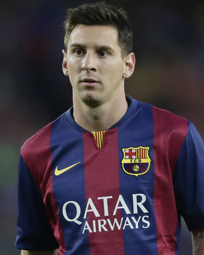

<p>Lionel Andrés "Leo" Messi Cuccittini (Spanish pronunciation: ( listen); born 24 June 1987) is an Argentine professional footballer who plays for Spanish club FC Barcelona and the Argentina national team. He is a forward and serves as captain for Argentina.

By the age of 21, Messi had received Ballon d'Or and FIFA World Player of the Year nominations. The following year, in 2009, he won his first Ballon d'Or and FIFA World Player of the Year awards. He followed this up by winning the inaugural FIFA Ballon d'Or in 2010, and then again in 2011 and 2012.</p>

